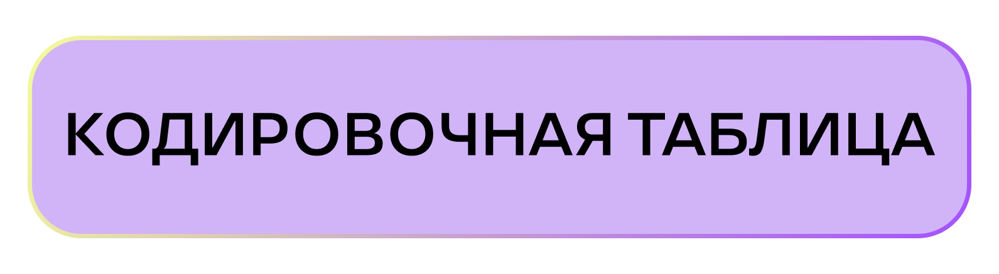
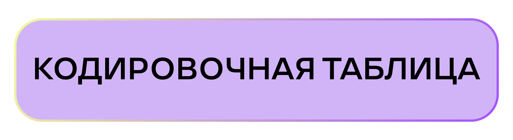

- Студенты полагают, что вера в эзотерику присуща «более чувствительным» по натуре людям.
- Среди причин начала пользования картами Таро наиболее часто отмечались интерес к картам как явлению и увлечение близкого человека.
- Карты Таро чаще всего используются с желанием узнать мотивы поведения людей.
- Студенты верят, что расклад карт оказывает влияние на жизнь человека.
«Я разложила карты и увидела не хорошую ситуацию с девушкой блондинкой. Так и произошло, причем эта девушка покрасилась, блонд не ее цвет волос. И я сказала, ну, значит, вот карты не врали».
- У студентов отсутствует единое отношение к тарологам. Одни отмечают, что обращаются только к проверенным специалистам, другие же не хотят делиться личной информацией с незнакомцем.
- Ситуации, провоцирующие гадания, носят фрагментарный характер. Однако подчеркивается, что как таковых обстоятельств, не возникает.
- Любимая колода способна повлиять на результат расклада.
«Ну, на самом деле у меня есть вот моя личная, моя любимая колода, которой я уже пользуюсь пару лет. И да, я считаю в какой-то мере, что если я гадаю на ней, это действительно влияет в лучшую сторону.»
- В свой первый опыт гадания студенты старались делать все строго по инструкции.
«Это было очень смешно, потому что я все делала по инструкции. Я понимала, что это просто первый раз, когда надо попробовать, как оно будет, как я ощущаю свою колоду. Потому что есть один хозяин, которому она, так сказать, приучена, и которого она чувствует больше всех..»
- Студенты склонны прибегать именно к Таро, а не другим эзотерическим товарам и практикам, поскольку скептически к ним относятся.
«Ну, у меня, во-первых, возник вопрос, а на чём ещё гадать, потому что для меня как будто это странно, например, гадание на кофейной гуще, хотя, я не спорю, что когда-то это тоже было популярным.».
- Среди источников информации для ознакомления с картами студенты выделяют тематические Telegram-каналы и специальные книги.
- Нежелание приобретать новые колоды обусловлено предвзятым отношением к феномену эзотерики и «банальностью» предлагаемой колоды.
- Покупка новых карт происходит у студентов стихийно.
«Мне банально проще было искать на маркетплейсах, чем искать специализированные магазины сомнительного доверия»
- В качестве дополнительных практик, которые улучшают понимание расклада на Таро, студенты отмечают медитацию.
- Пользование другими эзотерическими товарами, согласно студентам, связано с желанием связаться с умершим.
- Ключевым фактором отказа от пользования другими эзотерическими товарами является страх.
«Мне не очень понравился этот опыт, потому что на меня это как-то навело даже какой-то страх, и я не совсем понимаю, насколько это может быть правдой, потому что такое ощущение, что человек со страху может и сам делать какие-то микровибрации своими руками, и эта фишечка будет двигаться.»
- Мнения относительно важности элементов дизайна разделились. Одни полагают, что дизайн неважен, а другие отмечают, в колодах карт Таро их привлекают абстрактные символы, пастельные тона и классические мотивы.
- Студенты считают, что иллюстрация колоды влияет на расклад, воздействуя на чувства гадающих.
- Главенствующим фокусом в картах является важность понимания чувств человека.
- Среди преимуществ самостоятельного гадания чаще всего отмечалась возможность использования карт в любое время.
«Ну, во-первых, это время, потому что может возникнуть любое время потребность в раскладе.»
- Главным недостатком Таро студенты считают общие формулировки, присущие картам.
- Среди сомнений, связанных с картами, отмечаются проблемы интерпретации трактовки.
«У меня они присутствуют почти всегда, потому что я не знаю, насколько правильно мою трактовку поймёт другой человек.»
Самыми часто встречающимися кодами стали:
- Среди причин начала использования таро в основном выделяют:
-
Интерес к картам как к явлению – 6
-
Интерес в связи с увлечением близкого человека – 6
- Информанты верят во влияние таро на жизнь человека и отмечают:
- Совершая покупки, информанты выделяют следующие основные барьеры и желания
-
Скептицизм как барьер (к покупке) – 8
-
Желание просто и быстро найти товар не углубляясь в тему – 7
- В разговоре о дизайне информанты выделяют важность визуальной составляющей карт:
-
Привлекательность в простоте и милости иллюстраций – 7
-
Отсутствие «страшных» и сложных иллюстраций – 6
- Разрабатывая собственную колоду, информанты обращали внимание на следующие детали:
-
Важность чувств человека – 11
-
Влияние количества образов/символической насыщенности на результат расклада – 6
- Информанты выделяют сущственный недостаток гадания на таро
-
Проблемы интерпретации трактовки – 17
- При использовании таро обращаются к следующим темам:
-
Самопознание – 8
-
Желание узнать дальнейшее расположение дел – 10
 
